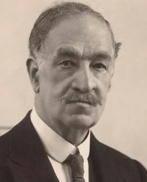
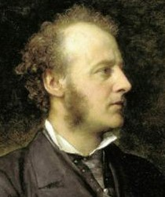
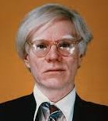
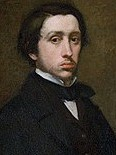
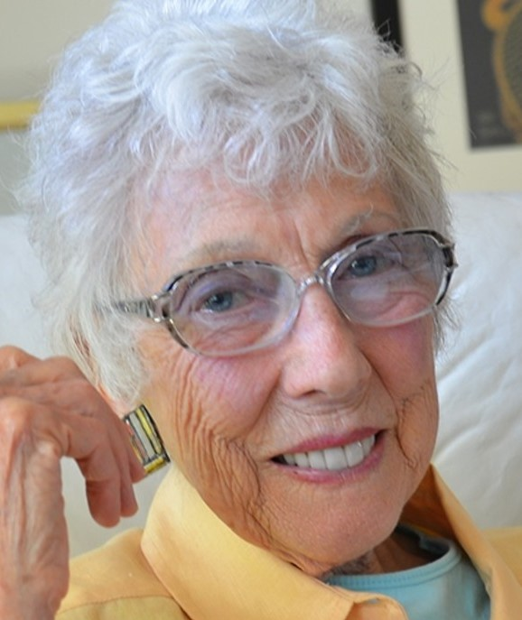
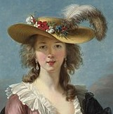

Louis William Wain Nacimiento: 5 de agosto de 1860, Londres
Fallecimiento: 4 de julio de 1939, Reino Unido fue un artista inglés. Wain es conocido por sus dibujos, en los cuales constantemente representó gatos.
John Everett Millais Nacimiento: 8 de junio de 1829, Reino Unido
Fallecimiento: 13 de agosto de 1896, Londres,fue un pintor e ilustrador inglés, destacado en el arte romántico, miembro fundador de la Hermandad Prerrafaelita. 
Andy Warhol Nacimiento: 6 de agosto de 1928, Estados Unidos
Fallecimiento: 22 de febrero de 1987, Estados Unidos, fue un artista plástico y actor estadounidense que desempeñó un papel crucial en el nacimiento y desarrollo del pop art 

Edgar Degas Nacimiento: 19 de julio de 1834,Francia
Fallecimiento: 27 de septiembre de 1917, Francia,Pintor y escultor, maestro del pastel y obsesionado por las bailarinas fue uno de los más célebres artistas vinculados al impresionismo 
Margaret Keane Nacimiento: 15 de septiembre de 1927, Estados Unidos
Fallecimiento: 26 de junio de 2022, Estados Unidos,fue una artista reconocida por los grandes ojos de sus personajes. 
Marie Louise Élisabeth Nacimiento: 16 de abril de 1755, París
Fallecimiento: 30 de marzo de 1842, París, fue la pintora francesa más famosa del siglo XVIII y una de las retratistas más demandadas de su época.